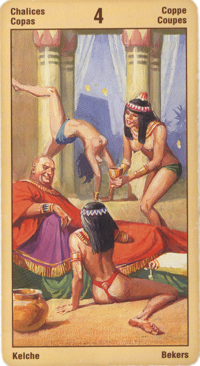

Четвёрка Кубков
Прямое положение: скука, отвращение, антипатия, мнимые неприятности. Эта карта также говорит о частой смене развлечений.
Значение: Это– человек, обиженный на всех сразу, как ребенок. Подарка, предлагаемого ему, он не замечает и не принимает. Надо перешагнуть через мелкие обиды, говорит эта карта, в случае ссоры – первому пойти на мировую и спокойно продолжать свое дело.
На практике это часто означает глупую амбицию, ради которой человек готов упустить уникальную возможность, отказаться от выгодного предложения... Перестань дуться, говорит эта карта, прислушайся к тому, что тебе говорят, иначе потом пожалеешь.
Настроение этой карты лучше всего определяется понятиями "пресыщение", "перебор". Помните о непостоянстве наших чувств: мы всеми силами души желаем чего-то, однако, достигнув этого (и даже большего, чем желали), вдруг понимаем, что нам это не нужно, и нас охватывают уныние, обида и отвращение. Это может выражаться в брюзжании, равнодушии или наоборот, раздражении, отчаянии и стремлении все разрушить.
Четверка. Информация, которую несет нам Четверка Чаш, заставляет серьезно задуматься о назревающих в вашей жизни проблемах. В вашей жизни не произошло ничего трагичного, что могло бы причинить вам столько огорчений. Но вы до такой степени запутались в собственных желаниях и страхах, что теперь потребуется определенное время, чтобы найти выход из этого тупика!
Карта говорит о неудовлетворенности жизнью, отрицательном взгляде на жизнь, усталости. Воображаемые обиды и недовольства. Необоснованные страхи и подозрения. Эту карту называют картой холостяков и старых дев. Если человеку не удается устроить личную жизнь причина не в других людях, а в нем самом. В его поведении и взгляде на жизнь, в видении проблем там, где их нет. В приписывании другим тех плохих качеств, которыми они не обладают.
Не¬которые тарологи связывали эту карту с пресыщением, скукой, даже с отвращением к надоевшей одежде, с фамильярным отношением к окружающим.
В перевернутом виде означает, что «поезд уже ушел», шанс упущен, и теперь человеку остается лишь думать, как исправить эту ошибку.
Вам могут представиться новые возможности и вы, похоже, с энтузиазмом ими воспользуетесь. Эта карта может указывать на то, что вы снедаемы страхом потери безопасности и надежности, причем на деле совершенно безосновательно. Этот страх может быть обусловлен опасениями, что вас бросят, и вы останетесь один, он может приводить к тому, что вы будете поддерживать отношения, которые вам не подходят или продолжать отношения, которые давно пора завершить.
Если в прямом положении четверка кубков является довольно критической картой и может рассматриваться, скорее, как несчастливая, то в перевернутом положении она выступает в прямо противоположном качестве. Это новые возможности, новые связи, новые знакомства, новые подходы к старым проблемам, новые знания. И если прямая карта соотносится с возвратными ситуациями и хроническими проблемами, то перевернутая указывает на очередную попытку решения этих проблем.
Появляется нечто новое на горизонте, новое знакомство, новые отношения; впрочем, сохраняются и признаки неблагоприятного воздействия; в воздухе витает неясная угроза.